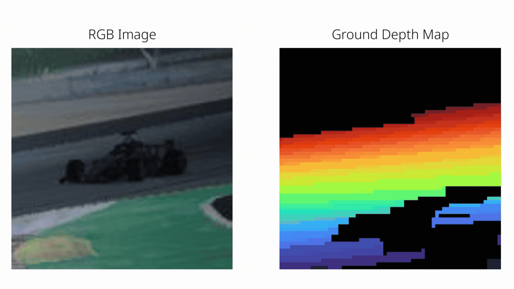
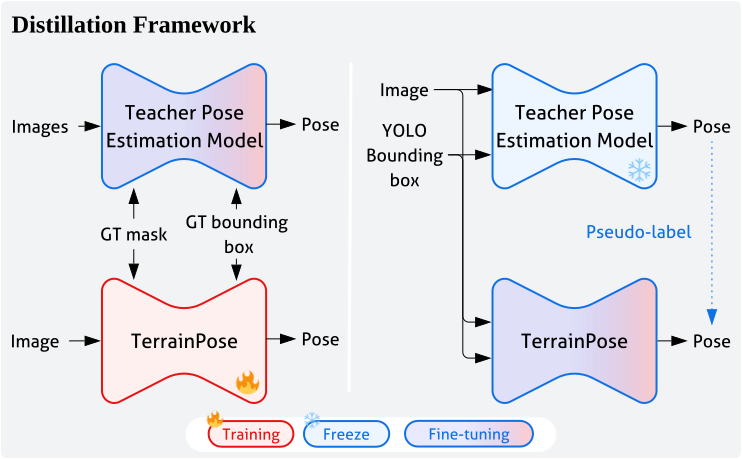
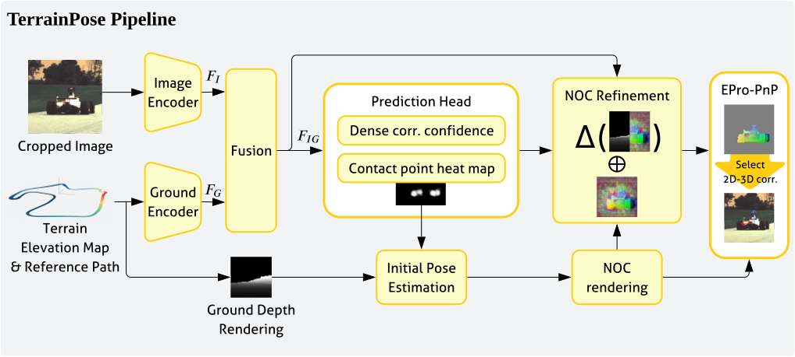
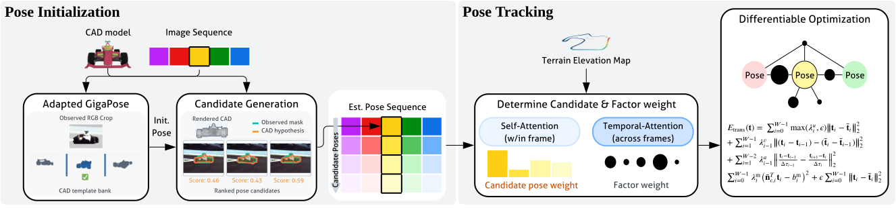
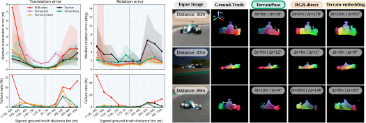

figure1.svg
Local image not found. The path above is relative to index.html.

noc_resize_gif.gif
Local image not found. The path above is relative to index.html.
Overview
- Terrain-conditioned correspondence estimation. TerrainPose incorporates terrain geometry into 2D–3D correspondence prediction to improve long-range monocular pose estimation.
- Geometry-guided initialization and refinement. Predicted wheel-contact locations and a terrain depth map provide an initial pose for rendering a NOC map, which is refined using image and terrain features.
- Teacher–student adaptation. Teacher-generated pose pseudo-labels supervise TerrainPose on real-world images.
Problem formulation
- 2D–3D Correspondence Estimation. We estimate correspondences between image pixels and points on the target surface to formulate a reprojection-error minimization problem.
- Pose Recovery with Terrain-Elevation Correction. The target pose is first estimated from the retained correspondences, and then its translation is corrected according to the terrain elevation map.
- Knowledge distillation. TerrainPose is supervised using teacher-generated pose pseudo-labels for real-world images.

figure_distillation.svg
Local image not found. The path above is relative to index.html.
Idea: TerrainPose

student_network_figure.svg
Local image not found. The path above is relative to index.html.
- Image and terrain features are fused to create terrain–image-conditioned features and used for the prediction of wheel-contact heatmaps.
- The predicted contact points overlaid on the depth map provide an initial pose for rendering a NOC map.
- This map is refined using RGB-NOC predictions and terrain-conditioned image features.
- During training, the differentiable EPro-PnP layer provides pose supervision for correspondence refinement.
Click to see the TerrainPose pipeline

Student_network.svg
Local image not found. The path above is relative to index.html.
Idea: Teacher network

Teacher_network.svg
Local image not found. The path above is relative to index.html.
- Adapted GigaPose initializes vehicle poses from RGB images and CAD templates.
- Candidate generation expands these estimates into competing hypotheses and evaluates their RGB/CAD agreement.
- Within-frame self-attention and temporal attention predict candidate and geometric-factor weights.
- Differentiable geometric refinement produces a pose for the target frame of each temporal window, forming the estimated pose sequence.
Experiments
Evaluation: Synthetic Data

figure4.svg
Local image not found. The path above is relative to index.html.
- RGB-direct: Dense correspondence-based pose estimation without terrain conditioning.
- Terrain-init: From RGB-direct, the PnP solver is initialized with a ground-contact-driven pose.
- Terrain-embed: From TerrainPose, the initial image-based NOC is refined with a residual conditioned on , instead of the rendered NOC.
Evaluation: Real-World Data

figure5.svg
Local image not found. The path above is relative to index.html.
run1.mp4
Video could not be loaded. Check the path relative to index.html and use a browser-compatible MP4.
Conclusion
In this work, we developed TerrainPose, a monocular pose estimation method that incorporates terrain geometry into 2D–3D correspondence prediction to compensate for weak visual cues at long range. We applied the method to estimate the pose of an opponent racecar on a racetrack with a known elevation map. Evaluation on synthetic data showed that, at ranges beyond 60 m, TerrainPose reduced median translation error from 2.84 m to 1.37 m and failure rate from 9.74% to 2.02%, compared to an RGB-only baseline not reliant on terrain geometry.
Teacher-student fine-tuning further reduced the pose estimation failure rate compared with the model without fine-tuning, although it did not improve the translation error. At the track, our method displayed real-time performance, with an average per-image pose estimation latency of 24.16 ms. Future work will focus on making terrain rendering more robust to calibration and localization uncertainty.